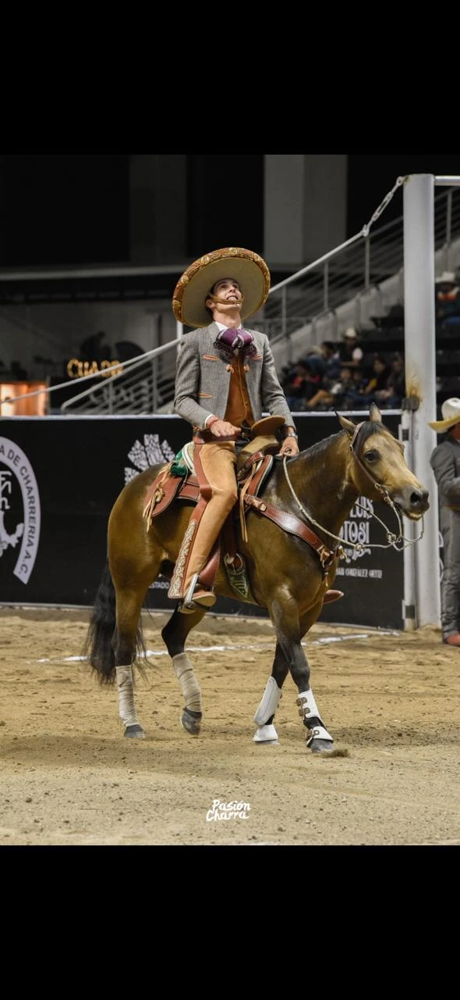

AC Acerca de
Alejandro Casillas.
Jinete y entrenador de rienda charra en Tepatitlán de Morelos, Jalisco.
01 Quién es AC
Acerca de AC Performance Horses
Alejandro Casillas entrena caballos cuarto de milla para la rienda charra desde Tepatitlán, en los Altos de Jalisco. Cada ejemplar se forma con método, paciencia y lectura fina del caballo: de sus primeras montas a la pista de competencia.

-
01
Quién
Ale Casillas es jinete y entrenador de rienda charra. Ha presentado caballos en lienzos de México y Estados Unidos, y ganó con Pirata la primera edición del Duelo de Maestros en Texas.
-
02
Qué hacemos
Doma y entrenamiento de potros, preparación para futurities y competencia, presentación en caladero y búsqueda del prospecto adecuado para cada jinete.
-
03
Dónde
En nuestras instalaciones de Tepatitlán de Morelos: pista de arena trabajada a diario y caballerizas entre campos de agave.
Conocer las instalaciones

02 Misión
Desarrollar el potencial atlético de cada caballo con un método honesto y constante, para que llegue a la pista listo para competir y para ganar.